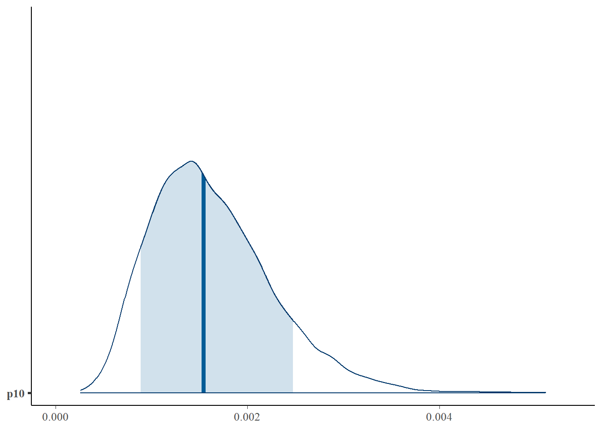
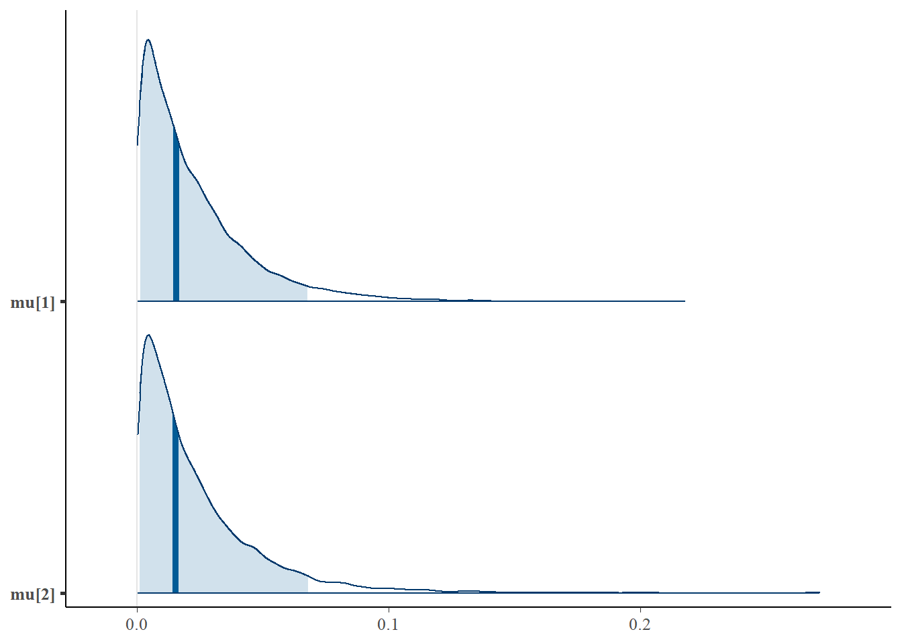
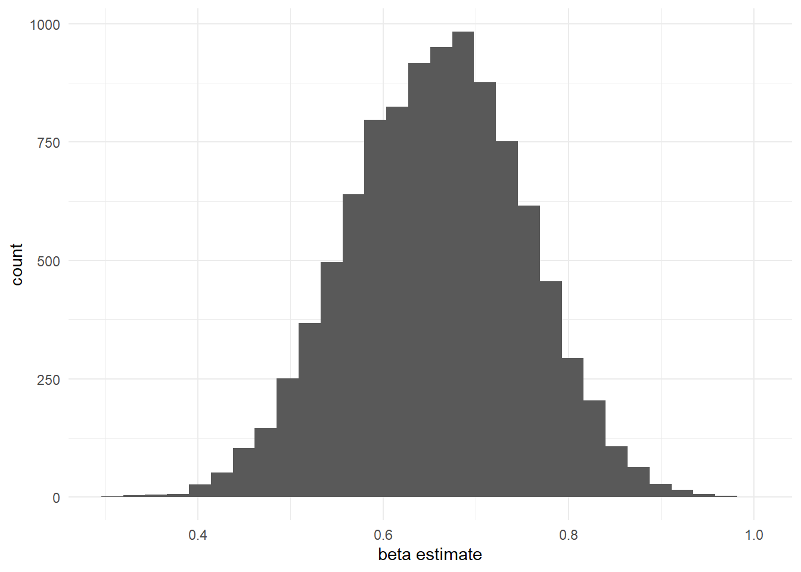
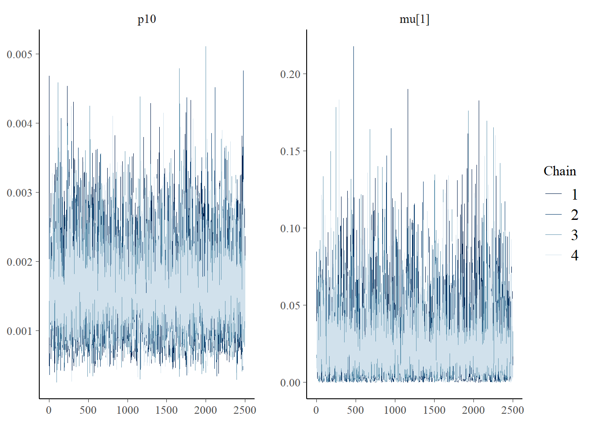
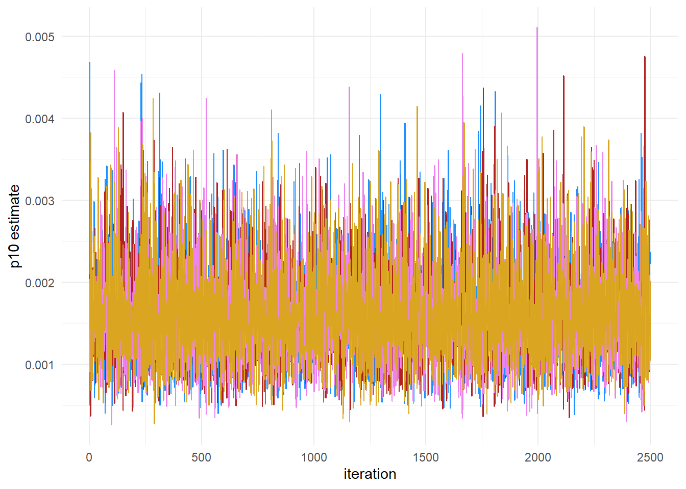
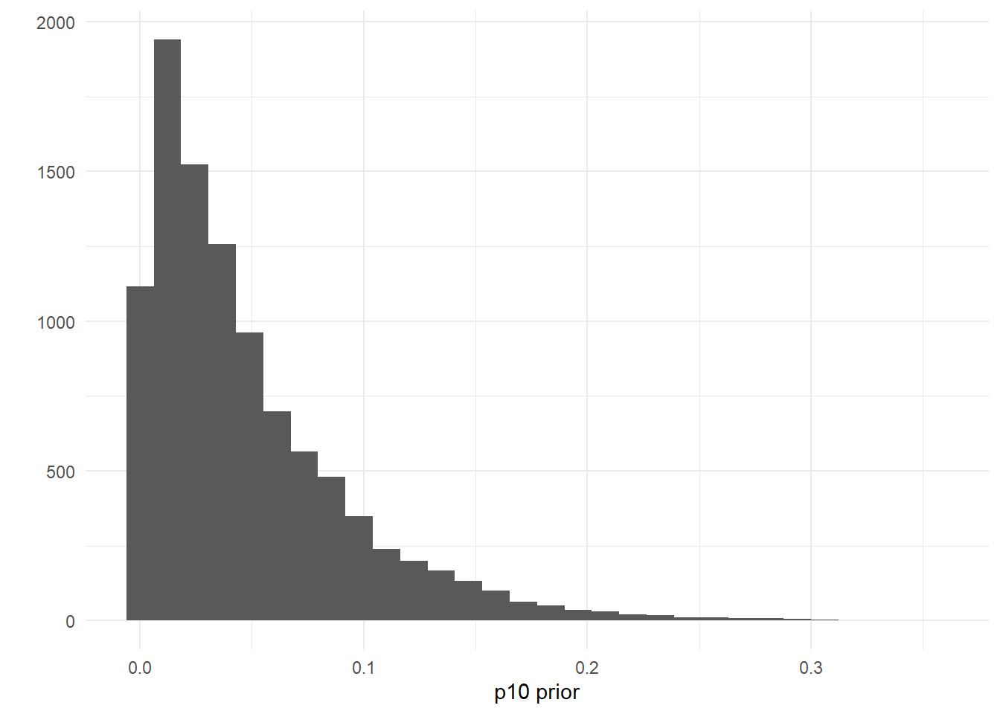
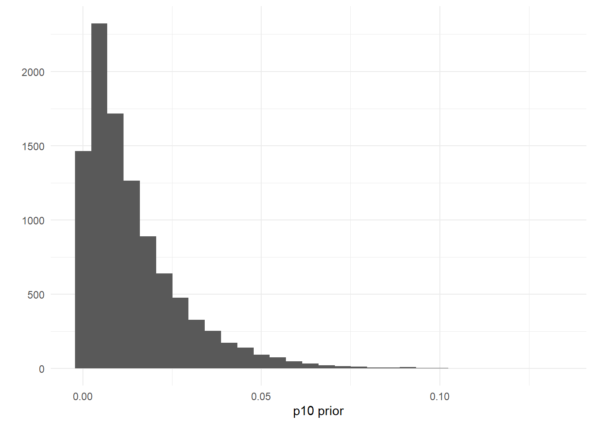
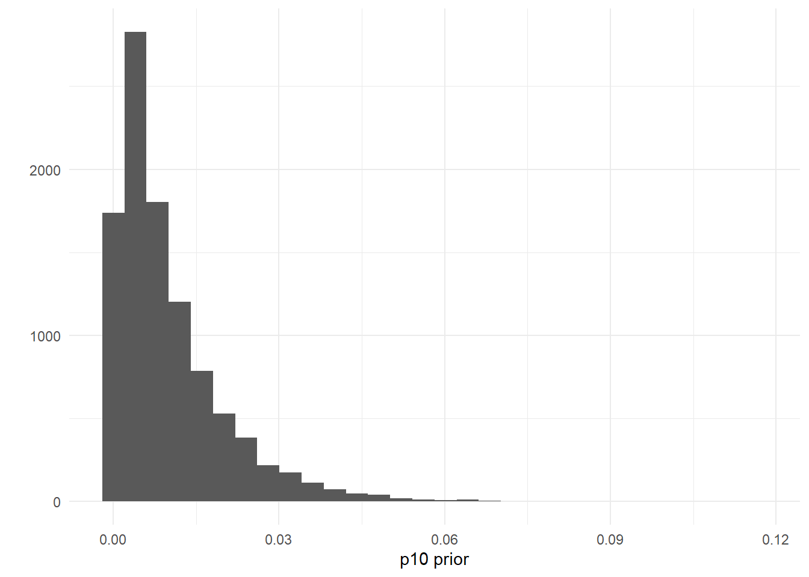
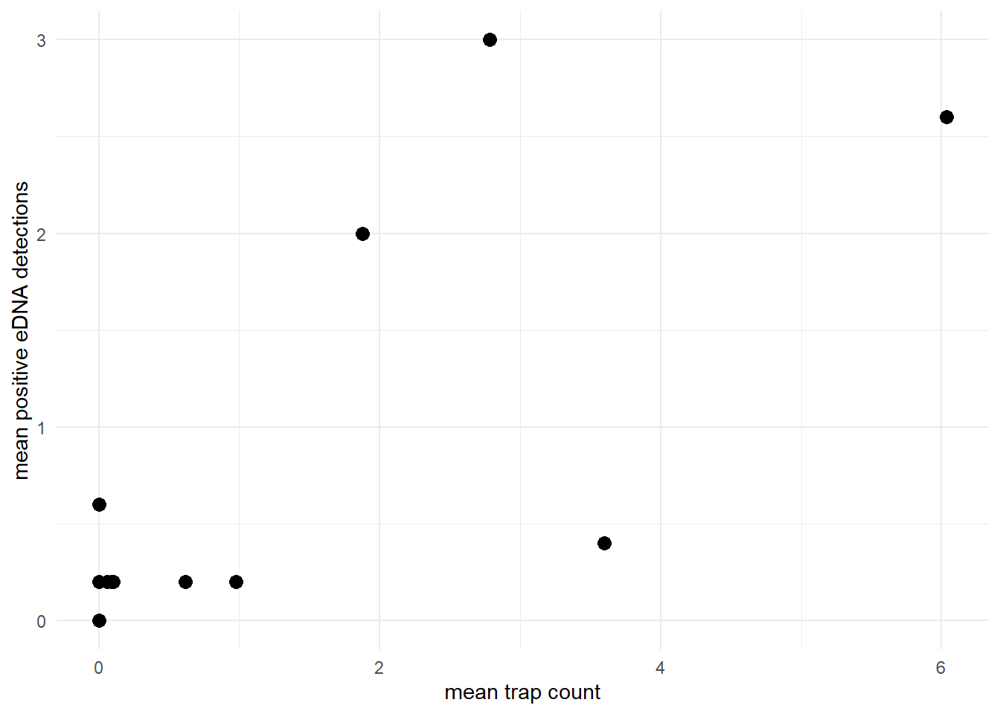
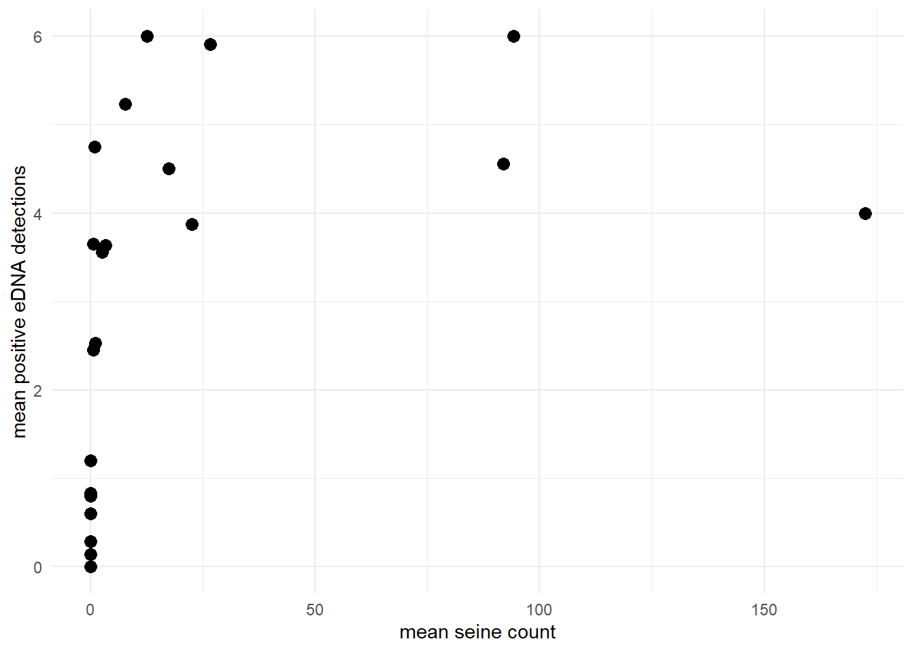

Chapter 8 Tips
8.1 Visualization tips
Running jointModel() with eDNAjoint returns an object of class stanfit and can be accessed and interpreted using all functions in the rstan package.
Here are a few examples of how to visualize your MCMC samples.
# run the joint model
library(eDNAjoint)
fit <- jointModel(data = gobyData, family = 'poisson',
p10priors = c(1,20), q=FALSE)8.1.1 Posterior samples
We can use the bayesplot package to examine the posterior distributions.
First, let’s look at the posterior distribution for \(p_{10}\).
library(bayesplot)
# plot posterior distribution, highlighting median and 80% credibility interval
mcmc_areas(as.matrix(fit$model), pars = 'p10', prob = 0.8)
We can also look at the posterior distributions of multiple parameters at once using bayesplot:
# plot posterior distribution, highlighting median and 90% credibility interval
mcmc_areas(as.matrix(fit$model), pars = c('mu[1]','mu[2]'), prob = 0.9)
And of course you can always plot the posterior samples using ggplot:
library(tidyverse)
ggplot()+
geom_histogram(aes(x=as.matrix(fit$model)[,'beta']))+
labs(x='beta estimate', y='count')+
theme_minimal()
8.1.2 Chain convergence
The bayesplot package can also be used to examine chain convergence for \(p_{10}\) and \(\mu_{i=1}\).
# this will plot the MCMC chains for p10 and mu at site 1
mcmc_trace(rstan::extract(fit$model, permuted = FALSE), pars = c('p10', 'mu[1]'))
This plot shows that our chains are well mixed.
We can also use ggplot to plot the chains:
library(tidyverse)
# get chains for param p10
chain1_p10 <- as.array(fit$model)[,'chain:1','p10']
chain2_p10 <- as.array(fit$model)[,'chain:2','p10']
chain3_p10 <- as.array(fit$model)[,'chain:3','p10']
chain4_p10 <- as.array(fit$model)[,'chain:4','p10']
ggplot()+
geom_line(aes(x=1:length(chain1_p10), y=chain1_p10),
color = 'dodgerblue')+
geom_line(aes(x=1:length(chain2_p10), y=chain2_p10),
color = 'firebrick')+
geom_line(aes(x=1:length(chain3_p10), y=chain3_p10),
color = 'violet')+
geom_line(aes(x=1:length(chain4_p10), y=chain4_p10),
color = 'goldenrod')+
labs(x='iteration', y='p10 estimate')+
theme_minimal()
8.1.3 Shinystan
Shinystan is also a great way to visualize your model fit and diagnose any problems.
Here’s how you would use the package:
Note that you will see the log likelihoods and derivative parameters not found in the model description, but you should focus on parameters present in table 1.
8.2 Troubleshooting tips
When running jointModel() are your chains not converging? Or are you getting divergent transitions? Here are some tips:
8.2.1 Quick tips
- Increase the
adapt_deltaparameter injointModel(). This governs how big the steps are in the MCMC, so if the steps are too big, then divergent transitions can happen (see more on this here). You could increase this value to something like 0.99 (closer to 1), although this will slow down sampling. - Test out different families to describe the data-generating process for the traditional survey data. The default in
jointModel()is a poisson distribution, which assumes that the variance equals the mean. Tryfamily = 'negbin', which uses a negative binomial distribution and allows for overdispersed traditional survey data (i.e., variance > mean). - Increase the number of burn-in samples with the
n.iter.burnparameter injointModel(). These burn-in samples are the MCMC “warm-up”, so by increasing the length of the warm-up, you could avoid getting divergent transitions during the actual sampling.
8.2.2 Initial values
The MCMC algorithm begins sampling at initial values for all the parameters. Sometimes problems can arise if 1) the MCMC starts sampling at parameter values that are far from the true parameter values, which will cause the adaptation to get funky, or 2) if the MCMC starts sampling at parameter values that are invalid, or where the likelihood of the parameter values given the data is 0.
Try setting better initial values for the MCMC. For guidance on how to set initial values, refer to the initial values sections for the basic, site-level covariates, multiple gear types, and semi-paired data examples.
8.2.3 Changing priors
The model uses a somewhat-informative prior distribution for the false positive probability of an eDNA detection, \(p_{10}\). If you are having convergence issues, you can try making this prior more informative.
The default prior is p10priors = c(1,20), which describes the beta distribution hyperparameters: alpha, beta. The mean of this distribution is \(\frac{\alpha}{\alpha + \beta}\), and the variance of this distribution is \(\frac{\alpha\beta}{(\alpha + \beta)^2(\alpha+\beta+1)}\). The mean and variance of the default prior is 0.048 and 0.0002, respectively.
ggplot()+
geom_histogram(aes(x=rbeta(n=10000, shape1=1, shape2=20)))+
labs(x='p10 prior',y='')+
theme_minimal()
If you wanted to add a more informative prior to reflect your belief that the probability of a false positive eDNA detection is low, you could change these parameter to something like p10prior=c(1,50), where the mean and variance are 0.014 and 0.00019, respectively.
ggplot()+
geom_histogram(aes(x=rbeta(n=10000, shape1=1, shape2=70)))+
labs(x='p10 prior',y='')+
theme_minimal()
Put another way, this choice of prior has 97% of its probability density <0.05:
## [1] 0.9724163You can also set this prior using your own data, perhaps from negative controls. For example, let’s say you used 25 negative qPCR controls during eDNA data processing. You can assume that the probability of a false positive is less than \(\frac{1}{25} = 0.04\). To reflect this data, you could create a prior where the probability \(p_{10}>0.04\) is low, like p10priors=c(1,100).
ggplot()+
geom_histogram(aes(x=rbeta(n=10000, shape1=1, shape2=100)))+
labs(x='p10 prior',y='')+
theme_minimal()
8.2.4 Adding site-level covariates
The model assumes that the site-level mean count and site-level mean eDNA detection rate are generally positively correlated. For example, let’s look at the relationship between the mean count and mean positive eDNA detections in the green crab data.
ggplot()+
geom_point(aes(x=rowMeans(greencrabData$count, na.rm=TRUE),
y=rowMeans(greencrabData$qPCR.K, na.rm=TRUE)),
size=3)+
labs(x='mean trap count',y='mean positive eDNA detections')+
theme_minimal()
Or perhaps let’s look at the goby data, where the mean positive eDNA detections asymptotically approaches the number of eDNA replicates (6) as the site-level mean seine count increases.
ggplot()+
geom_point(aes(x=rowMeans(gobyData$count, na.rm=TRUE),
y=rowMeans(gobyData$qPCR.K, na.rm=TRUE)),
size=3)+
labs(x='mean seine count',y='mean positive eDNA detections')+
theme_minimal()
If your data does not show a similar relationship and is not converging with jointModel(), then consider adding site-level covariates that can explain why the sensitivities between eDNA and traditional sampling do not have the same relationship across all sites. These site-level covariates can be quantitative or categorical (i.e., dummy variables). For example, are some of your sites ponds and others rivers? Is salinity higher at some of your sites? Are some sites particularly turbid? See use case 2 for an example of how to implement jointModel() with site-level covariates.